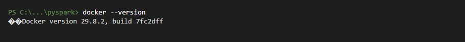
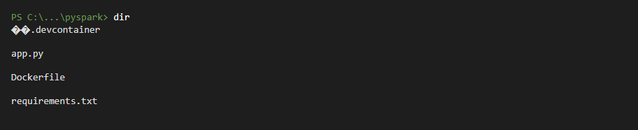
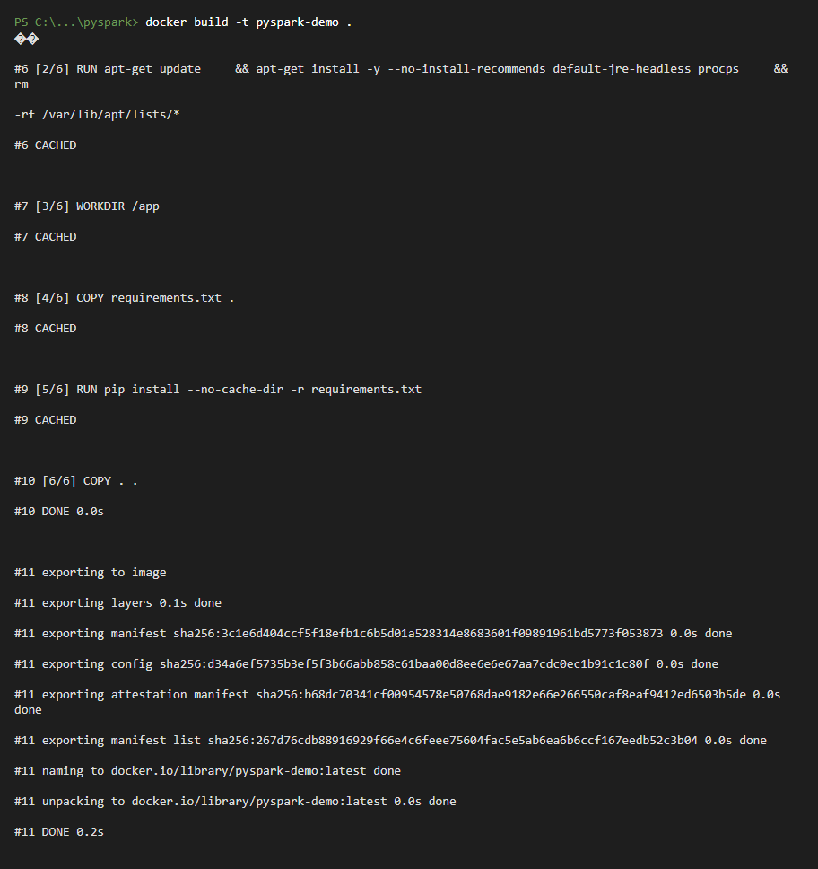
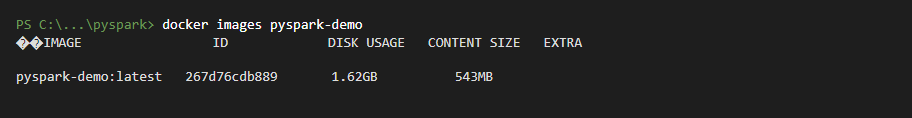
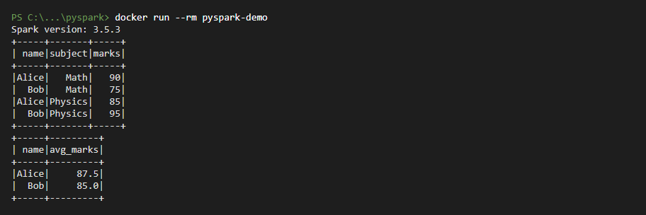
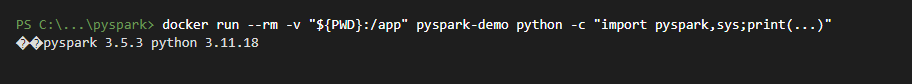

No Java, Python or Spark install needed on your computer. Docker packages Python 3.11, Java (JRE), PySpark 3.5.3, pandas, numpy and pyarrow for you.
Open VS Code, then Terminal → New Terminal.
docker --version

File → Open Folder… and choose this pyspark folder. It contains:
Dockerfile – recipe for the environment (Python + Java + dependencies)requirements.txt – Python packages (pyspark, pandas, numpy, pyarrow)app.py – a sample PySpark program.devcontainer/devcontainer.json – lets VS Code work inside the container
docker build -t pyspark-demo .

The last lines show the image was created and named pyspark-demo.
docker images pyspark-demo

docker run --rm pyspark-demo

You should see Spark version: 3.5.3 and two tables. Spark's startup warnings (e.g. "Unable to load native-hadoop library") are harmless.
Edit app.py in VS Code, then run it using the live folder (no rebuild needed).
# PowerShell
docker run --rm -v "${PWD}:/app" pyspark-demo python app.py
# Command Prompt: -v "%cd%:/app"
Quick version check:

app.py and click the ▶ Run Python File button, or in the VS Code terminal run python app.py.
docker run --rm -it -v "${PWD}:/app" pyspark-demo bash
docker run --rm -it pyspark-demo pyspark